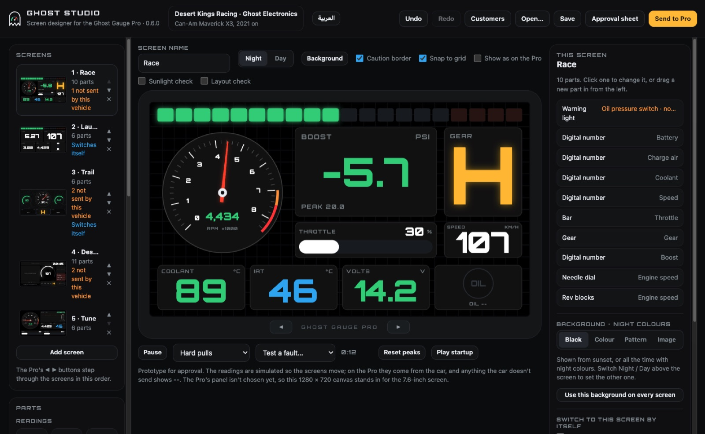

Ghost Studio
The screen designer for the Ghost Gauge Pro, for garages. Design your customers’ dash screens, try them on a simulated drive, and hand them an approval sheet to sign.
Ghost Studio
مصمّم الشاشات لعدّاد Ghost Gauge Pro، للورش. صمّم شاشات عملائك، وجرّبها على قيادة محاكاة، وسلّمهم ورقة موافقة للتوقيع.

Getting started
Install it
Mac: open the file you downloaded and drag Ghost Studio into Applications.
Windows: run the installer. Windows may show a blue “Windows protected your PC” box: click More info, then Run anyway.
Send your request
Ghost Studio opens on a page asking for a licence. Type your garage’s name, click Copy the request and send it to Ghost Electronics on WhatsApp or by email. It holds only your computer’s code, its name and your garage’s name.
Open your licence
You get a .ghostlicence file back. Double-click it, and Ghost Studio opens ready to use. A licence works on that computer only.
After that
- Ghost Studio updates itself: when a new version is out it downloads in the background and asks you to restart.
- It works in English and Arabic; the button at the top switches.
- Your customers’ projects are kept in Documents › Ghost Studio › Customers. Back that folder up with the rest of your work.
البدء
ثبّته
Mac: افتح الملف الذي نزّلته واسحب Ghost Studio إلى مجلد التطبيقات.
Windows: شغّل المثبّت. قد يظهر مربع أزرق «Windows protected your PC»: انقر More info ثم Run anyway.
أرسل طلبك
يفتح Ghost Studio على صفحة تطلب ترخيصًا. اكتب اسم ورشتك، وانقر نسخ الطلب، وأرسله إلى Ghost Electronics عبر واتساب أو البريد الإلكتروني. يحتوي فقط على رمز جهازك واسمه واسم ورشتك.
افتح ترخيصك
يصلك ملف الترخيص. انقر عليه مرتين ليفتح Ghost Studio جاهزًا للاستخدام. يعمل الترخيص على ذلك الجهاز فقط.
بعد ذلك
- يحدّث Ghost Studio نفسه: عند صدور إصدار جديد يُنزَّل في الخلفية ويطلب منك إعادة التشغيل.
- يعمل بالعربية والإنجليزية؛ والزر في الأعلى يبدّل بينهما.
- تُحفظ مشاريع عملائك في المستندات › Ghost Studio › Customers. انسخ هذا المجلد احتياطيًا مع بقية عملك.